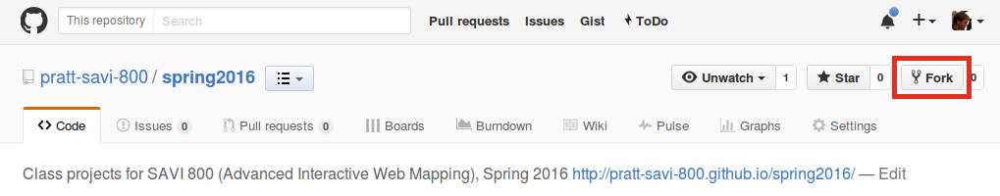
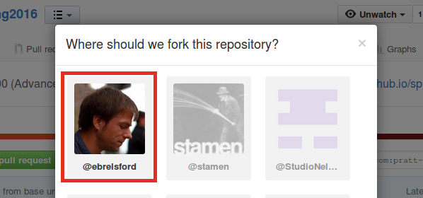
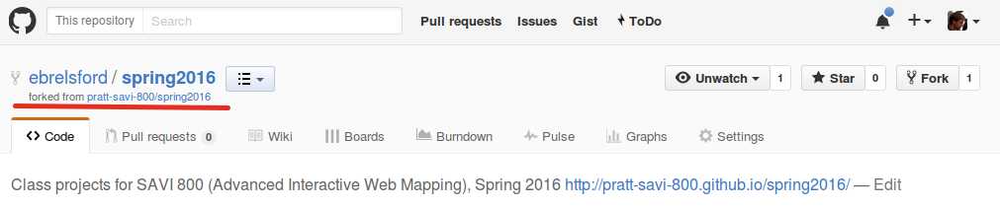
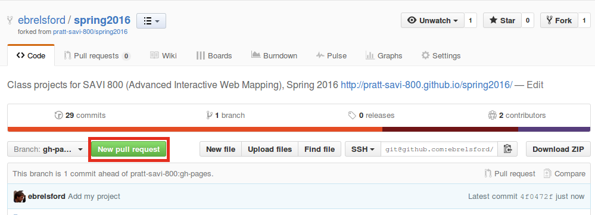
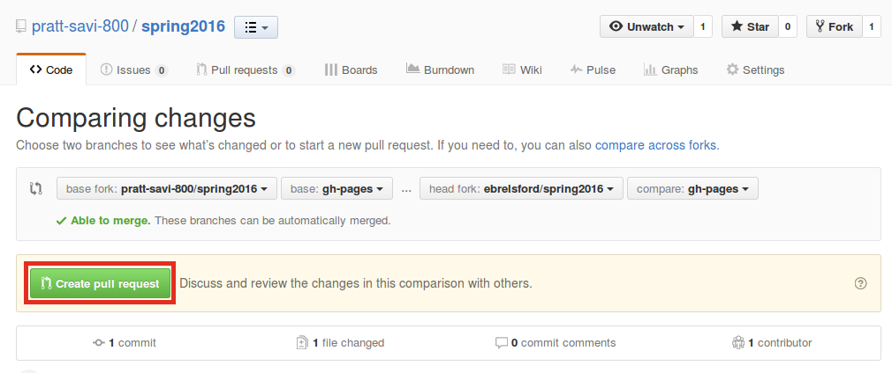
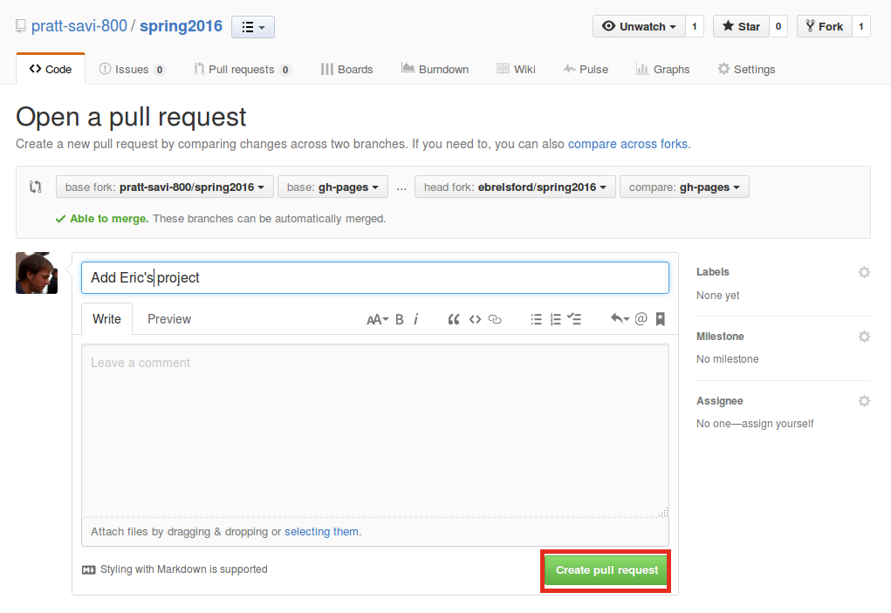

Final Project
Due Sunday, May 15th at noon
Make a substantial web map that includes topics covered in the class. We've covered a number of web mapping techniques that you might consider incorporating, from CartoDB to external APIs to client-side GIS with Turf.
Your project will be judged according to the following criteria:
- Scope: is the amount of work involved in line with what is expected? If there is any doubt, talk to the instructor.
- Functionality: does it work? Does it effectively use topics covered in class?
- Design: does it look good? Does it use the medium of interactive online maps well?
- Hosting: it should be in GitHub and hosted on GitHub pages.
- Code: did you use best practices such as keeping the code style clean and readable?
- Methodology/writeup: include an "about" or "methodology" section that makes it clear to any viewer exactly where you're getting the data that is shown on the map and how you've changed that data. Please also include a short section covering the techniques you used with links to projects you used.
Submitting your work
This work is due Sunday, May 15th, at noon.
Final projects will be aggregated on this page in GitHub Pages, and the repository is at pratt-savi-800/spring2016.
Please submit your project using GitHub:
- Fork the repository into your account:

- Clone the repository in your account to your computer.
- Add your project:
- In
_projects/, copyexample-project.mdto your own file. Rename the file to reflect a title for your project, with hyphens instead of spaces. - In
img/, create a folder with the same name as you used for your file in the previous step (without the.md). Add any images you would like in yourimg/folder. - Back in the file you created, update the "front matter" at the top of the file. You'll want to change
title: your project titlelinkname: the filename you're usingauthor: your nametagline: a short description of your projectlocation: where the project is based (eg, a city, state, or country)project-link: the URL of your projecttags: two or three words for categories your project falls intothumbnail-path: the path to the image you would like to show up on the main page for your projectimg-folder: your project's image foldertimestamp: the time you're adding this at
- Add a few paragraphs and images describing your project under the "front matter" that you edited above. If you like, you can embed your project using an
iframe. - Look at the projects files in methods3-fall2015 for examples of using images and other techniques.
- In
- Commit the changes to your repository and push them to GitHub. Examine the changes to ensure that your project's page looks as you expect it to. Remember that you are still working on your own repository, so you will need to go to your own URL for it. For example, since my username is
ebrelsford, my URL for the site would behttp://ebrelsford.github.io/spring2016. - Once you are happy with the way your project looks in your repository, make a pull request to the original repository to include it there:
